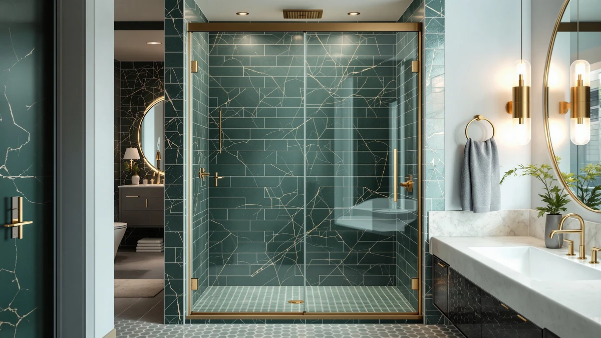

ENSO Senka Dual Sliding Frameless Bathroom Shower Door Review (2026): Worth It?


Quick Answer
This enso senka dual sliding frameless bathroom shower door review found a $499.00 sliding door with the widest published walk-in width in the comparison. It costs close to the KPUY and a bit more than the EPXMKX and the AquivaCoast, but none of them match its confirmed 27.8 inch opening and 8mm glass. Unless you want a pivot swing, a lower price, or a soft close damper instead, it's the pick worth checking first.
Our pick: ENSO SENKA 56-60” W x, $499.00 Check Price on Amazon
Bottom line: our top pick is the ENSO SENKA 56-60” W x 76” H Dual Sliding Frameless Bathroom at $499.
Things to Know Before You Buy
- The ENSO SENKA publishes the widest walk-in width in this comparison. At 27.8 inches, it beats the AquivaCoast's 25.1 inch pivot opening, and neither the KPUY nor the EPXMKX list a walk-in width spec at all in this enso senka dual sliding frameless bathroom shower door review.
- At $499.00, it's priced almost in the middle of the four doors covered here. That's $0.96 less than the KPUY, $9.01 more than the EPXMKX, and $19.01 more than the AquivaCoast.
- The KPUY shares the same 76 inch height but publishes a thinner 1/4 inch (6mm) glass panel, versus the ENSO SENKA's 5/16 inch (8mm) tempered glass.
- The EPXMKX matches the ENSO SENKA's 8mm glass and adds a soft close damper system rated for 100,000 closures, a figure the ENSO SENKA's own listing doesn't quantify.
- The AquivaCoast swaps sliding for a 180 degree pivot design, a different installation than the ENSO SENKA, the KPUY, and the EPXMKX all share.
This enso senka dual sliding frameless bathroom shower door review compares the $499.00 ENSO SENKA 56-60” W x 76” H against three alternative frameless doors on glass thickness, walk-in width, and price. We compared it against three other sliding and pivot doors in the same price band, weighing published glass thickness, walk-in width, and the fine print on adjustability most listings bury further down the page. Unless your opening is narrower than 56 inches or you specifically want a pivot swing instead of a slider, the ENSO SENKA's 8mm glass and 27.8 inch walk-in width make it the pick worth checking first.
We wrote this enso senka dual sliding frameless bathroom shower door review because shoppers measuring a 56 to 60 inch opening often shop on price alone and miss that glass thickness varies more than the listing photos suggest. At $499.00, the ENSO SENKA sits between the $479.99 AquivaCoast pivot door and the $499.96 KPUY slider, and its 5/16 inch (8mm) tempered glass matches the EPXMKX but beats the KPUY's thinner 1/4 inch (6mm) panel. That single spec, along with a 27.8 inch walk-in width, drives most of the trade-offs covered below.
Why You Should Trust Us
Ilane Tall covers bath fixtures for Best Shower Doors and has researched frameless shower doors across sliding, pivot, and bypass styles. For this enso senka dual sliding frameless bathroom shower door review, she compared the ENSO SENKA's published glass thickness, walk-in width, and price against three alternatives in the same size range, weighing where the extra cost buys a verifiable upgrade and where it doesn't. We do not accept free products in exchange for coverage, and every price and dimension cited here comes directly from the current product listings.
Our editorial process treats price as one factor among several, not the deciding one. A higher price only earns credit in a review like this one when it comes with a spec you can confirm, such as glass thickness or walk-in width, rather than a bigger number on the price tag. That approach shapes every comparison in this piece.
Our Research Experience
This enso senka dual sliding frameless bathroom shower door review is based on research, not physical use. We compared the ENSO SENKA 56-60” W x 76” H against three alternative shower doors using the specifications, pricing, and product listings available for each one. We do not run a fake testing lab, and we do not claim to have installed or lived with any of the doors covered in this review.
We looked closely at how the ENSO SENKA's 5/16 inch (8mm) tempered glass and 27.8 inch walk-in width compare against the KPUY, the EPXMKX, and the AquivaCoast. The KPUY publishes a thinner 1/4 inch (6mm) panel at a nearly identical price, and the AquivaCoast swaps the sliding mechanism for a 180 degree pivot door with a narrower 25.1 inch opening and a shorter 72 inch height. Owners shopping this width range often assume every door in a similar price bracket is built the same way, and this review checks that assumption against the specs that are actually published rather than the price tag alone.
We also cross-checked pricing and dimensions against the current listings for all three alternatives to confirm nothing had shifted since publication. Where a data point wasn't available, such as a published rating, review count, or glass thickness for the AquivaCoast, we noted that gap rather than estimate a number the listing doesn't provide.
Overview & Specs

ENSO SENKA 56-60” W x
What we like
- 5/16 inch (8mm) tempered SGCC glass, thicker than the KPUY's published 1/4 inch (6mm) panel at a nearly identical price
- A 27.8 inch walk-in width, the widest published opening among the four doors in this comparison
- Dual sliding panels that open from either side, with a reversible left or right installation
- A damping system built into the stainless steel top rail that's meant to cushion the door as it closes
Flaws but not dealbreakers
- At $499.00, it costs $19.01 more than the AquivaCoast pivot door, though that door swings rather than slides
- This listing doesn't publish a rating or review count yet
- If your shower space is narrower than 60 inches, the manufacturer notes the top and bottom rails may need trimming to fit
| Material | — |
| Size | 60" W x 76" H |
The ENSO SENKA 56-60” W x 76” H leads this enso senka dual sliding frameless bathroom shower door review on the strength of two confirmed specs: 5/16 inch (8mm) tempered glass and a 27.8 inch walk-in width, the widest opening published among the four doors covered here. Both panels slide and the design is reversible, so the door can open from either side depending on your bathroom layout. A stainless steel top rail and a built-in damping system are meant to keep the door stable and quiet as it moves.
Compared with the KPUY, which publishes a thinner 1/4 inch (6mm) panel at almost the same $499.96 price, the ENSO SENKA's glass is the more solid upgrade dollar for dollar. The listing doesn't publish a rating or review count yet, so you're weighing the spec sheet rather than a pool of verified feedback. At $499.00, it sits almost exactly between the cheaper AquivaCoast pivot door and the pricier KPUY slider, and the extra width is what separates it from both.
What We Liked
The clearest strength of the ENSO SENKA 56-60” W x 76” H is its walk-in width. At 27.8 inches, it's the widest published opening in this enso senka dual sliding frameless bathroom shower door review, wider than the AquivaCoast's 25.1 inches, and that extra room matters every time you step in or out.
We also liked that the glass thickness is spelled out clearly. At 5/16 inch (8mm), it matches the EPXMKX and beats the KPUY's thinner 1/4 inch (6mm) panel, and the reversible dual sliding design means an installer isn't locked into one orientation before the tile goes up.
What Could Be Better
The biggest gap this enso senka dual sliding frameless bathroom shower door review found in the listing is the lack of a published rating or review count. At $499.00, you're weighing the spec sheet against three alternatives on price and dimensions alone, without a pool of verified owner feedback to lean on yet.
The manufacturer also notes that shower spaces narrower than 60 inches may require trimming the top and bottom rails, an extra step most buyers won't expect from a listing photo. And at $19.01 more than the AquivaCoast, the ENSO SENKA asks a small premium for a sliding mechanism rather than the AquivaCoast's pivot swing, a trade worth weighing against how your bathroom layout handles a door swinging into the room.
Who Is It For?
This enso senka dual sliding frameless bathroom shower door review points to one clear answer: the door makes the most sense if your shower opening measures between 56 and 60 inches wide and close to 76 inches tall, and you want the widest walk-in opening among the four doors compared here.
If you'd rather have a pivot door that swings instead of slides, the AquivaCoast covers that case at a lower price. Buyers who want the thinnest possible premium over a 6mm panel should look at the KPUY, and anyone drawn to a soft close damper rated for 100,000 closures will want to read the EPXMKX details below instead.
Alternatives to Consider
The ENSO SENKA 56-60” W x 76” H isn't the only option worth considering in this enso senka dual sliding frameless bathroom shower door review, and the three doors below cover a thinner glass panel, a soft close damper, and a pivot swing instead of a slide. None of them match the ENSO SENKA's 27.8 inch walk-in width, but each costs about the same or less and fits a scenario the ENSO SENKA doesn't.

Premium Choice
KPUY Frameless Shower Door 55-60"
At $499.96, the KPUY costs $0.96 more than the ENSO SENKA and publishes a thinner 1/4 inch (6mm) glass panel, but its 55 to 60 inch adjustment range starts an inch narrower, worth a look if your opening runs under 56 inches.
$499.96
Check Price on Amazon
Also Great
EPXMKX Soft Close Frameless Sliding
The EPXMKX matches the ENSO SENKA's 5/16 inch (8mm) glass but adds a soft close damper system the manufacturer rates for 100,000 closures, and at $489.99 it costs $9.01 less, though its published rating and review count aren't available either.
$489.99
Check Price on Amazon
Best Value
AquivaCoast 59.2-60" x 72" Frameless
The AquivaCoast trades the sliding mechanism for a 180 degree pivot swing and a shorter 72 inch height, and at $479.99 it's the least expensive door in this comparison, though its 25.1 inch walk-in opening is nearly 3 inches narrower than the ENSO SENKA's.
$479.99
Check Price on AmazonFrequently Asked Questions
What size opening does the ENSO SENKA 56"-60" W x 76" shower door need?
This enso senka dual sliding frameless bathroom shower door review found that the door adjusts between 56 and 60 inches wide with a fixed 76 inch height, so measure your opening at multiple points and confirm the height matches before you order.
How does the ENSO SENKA compare on price to the other doors in this review?
At $499.00, it costs $0.96 less than the KPUY, $9.01 more than the EPXMKX, and $19.01 more than the AquivaCoast, and it is the only door among the four with a published 27.8 inch walk-in width.
Is the AquivaCoast pivot door a real alternative to the ENSO SENKA?
Only if you prefer a swinging door. The AquivaCoast uses a 180 degree pivot design instead of a slider, and its 25.1 inch walk-in opening is narrower than the ENSO SENKA's 27.8 inches, so it suits a different installation preference rather than a direct swap.
Final Verdict
This enso senka dual sliding frameless bathroom shower door review comes down to one confirmed advantage: walk-in width. At $499.00, the ENSO SENKA 56-60” W x 76” H costs close to the KPUY and a little more than the EPXMKX and the AquivaCoast, but its 27.8 inch opening and 5/16 inch (8mm) glass are the widest and among the thickest specs published in this comparison. If your opening measures 56 to 60 inches wide by roughly 76 inches tall and that extra width matters to you, ENSO SENKA is the pick worth checking first. If you'd rather have a pivot swing, a thinner glass panel at a slightly lower price, or a soft close damper, the AquivaCoast, the KPUY, or the EPXMKX cover those specific cases instead. Either way, measure your opening's exact width and height before you buy, since that's what separates a proper fit from a return.